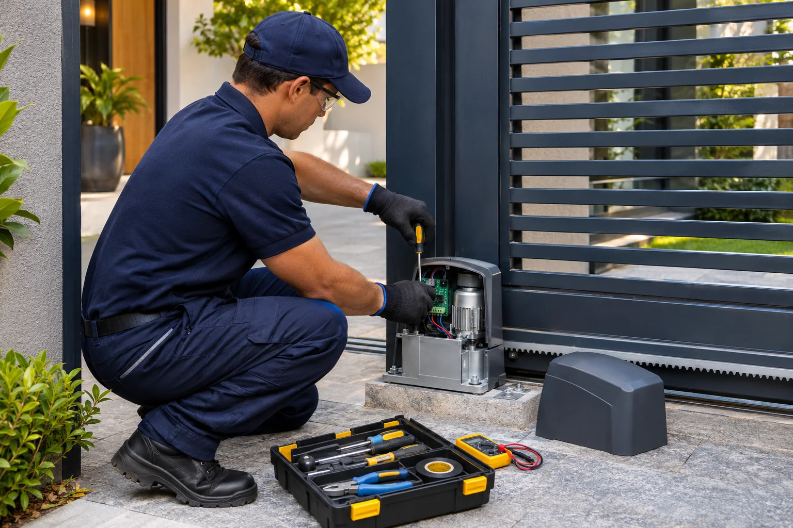
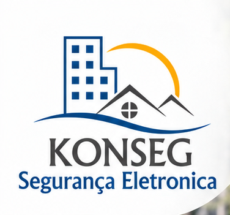
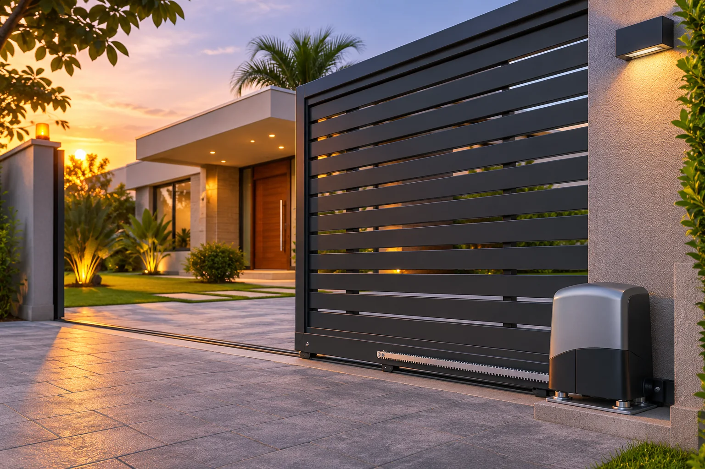
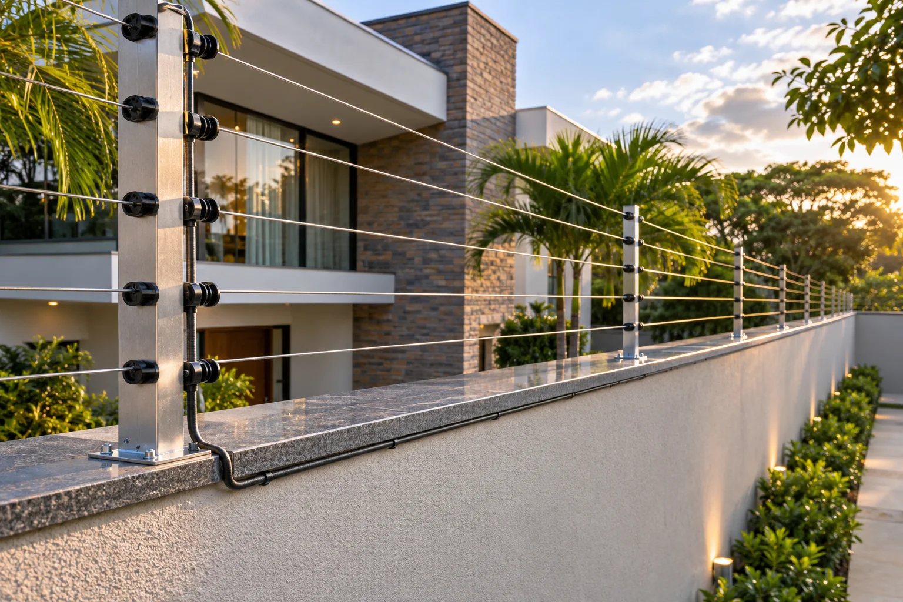

01 / AUTOMATIZAÇÃO
Motores de portão
Portão travando, lento ou sem funcionar? Avaliamos o problema e orientamos a solução adequada para o seu equipamento.
- Instalação de motores
- Manutenção preventiva e corretiva
- Ajustes e suporte técnico


Fale pelo WhatsAppSÃO JOSÉ DOS CAMPOS E REGIÃO
Instalação e manutenção de motores de portão, câmeras, cercas elétricas e controle de acesso. Soluções para residências, condomínios e empresas, com atendimento personalizado.
Solicite uma avaliação gratuitaPelo WhatsApp · (12) 99163-1525

Residências · Condomínios · Empresas
O QUE PODEMOS RESOLVER
01 / AUTOMATIZAÇÃO
Portão travando, lento ou sem funcionar? Avaliamos o problema e orientamos a solução adequada para o seu equipamento.

02 / PROTEÇÃO PERIMETRAL
Instalação e manutenção para reforçar a proteção do perímetro do seu imóvel, com orientação técnica para cada espaço.
Consultar cerca elétrica03 / MONITORAMENTO
Planejamento, instalação e manutenção de sistemas de câmeras nos pontos que mais precisam de atenção.
Consultar câmeras04 / ACESSO
Soluções para organizar e proteger a entrada de pessoas em residências, condomínios e empresas.
Consultar controle de acesso05 / DETECÇÃO
Instalação e manutenção de equipamentos para detectar movimentações e reforçar a proteção do imóvel.
Consultar alarmesTambém atendemos: redes estruturadas e automação residencial.

EXPERIÊNCIA E CUIDADO
Desde 2012, a Konseg oferece soluções de segurança eletrônica e automação para residências, condomínios e empresas. Atendemos São José dos Campos e região, além do Litoral Norte, com instalação cuidadosa, atendimento personalizado e suporte após o serviço.
Antes de indicar um equipamento, entendemos a necessidade do local para propor uma solução adequada, com orçamento apresentado antes da contratação.
Orientação de acordo com o espaço e a necessidade.
Atenção ao acabamento e ao funcionamento do sistema.
Um contato para acompanhar e cuidar dos equipamentos.
SOLUÇÕES EM DESTAQUE
Soluções planejadas para valorizar a entrada do imóvel, reforçar o perímetro e manter seus equipamentos funcionando com segurança.
Imagens ilustrativas dos tipos de solução atendidos pela Konseg.
AVALIAÇÕES REAIS NO GOOGLE
Nota máxima no Google: 5,0 de 5, com 13 avaliações.
“Profissional qualificado e preço justo. Trabalho bem feito e sem dor de cabeça. Recomendo a todos.”
Matheus PradoAvaliação no Google
“Experiência muito boa, indiquei para outras pessoas que deram o mesmo feedback positivo! Recomendo!”
Erica CostaAvaliação no Google
“Empresa excelente, profissionais ótimos. Entrega na data! Recomendo!”
Aline ReaicheAvaliação no Google
“Profissional qualificado e muito bem educado, executando serviço de qualidade!!”
Marcus ViniciusAvaliação no Google
“Excelente profissional, melhor preço que achei... recomendo!!!”
Marcio PradoAvaliação no Google
DO PRIMEIRO CONTATO AO SERVIÇO
Envie seu bairro, cidade e uma descrição do serviço pelo WhatsApp. Fotos ajudam na avaliação inicial.
Alinhamos um horário e verificamos a melhor solução para o seu imóvel ou equipamento.
Você conhece o serviço proposto e os valores antes de decidir pela contratação.
VAMOS CUIDAR DO SEU ESPAÇO?
Em São José dos Campos e região, a avaliação é gratuita. Para o Litoral Norte, consulte as condições da visita técnica.
Conversar com a Konseg(12) 99163-1525São José dos Campos e região
Avaliação gratuita.
Litoral Norte
Atendimento sujeito às condições da visita técnica.
Segunda a sexta, das 8h às 18h.
Visitas mediante agendamento.
DÚVIDAS FREQUENTES
Sim, em São José dos Campos e região. Informe sua cidade e bairro pelo WhatsApp. Para o Litoral Norte, consulte as condições da visita técnica.
Sim. Conte qual equipamento precisa de atendimento e descreva o problema. Nossa equipe avalia a possibilidade de manutenção e a solução indicada.
Clique em um botão de WhatsApp e envie sua cidade, bairro e o serviço desejado. O orçamento será apresentado conforme a avaliação da necessidade.